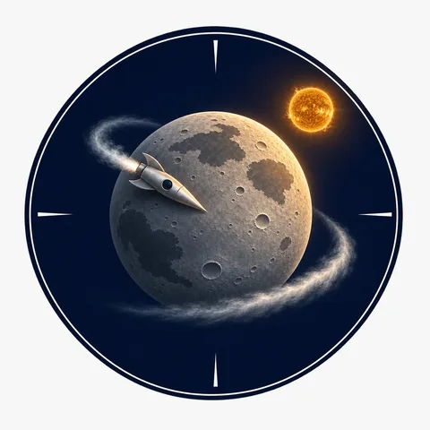
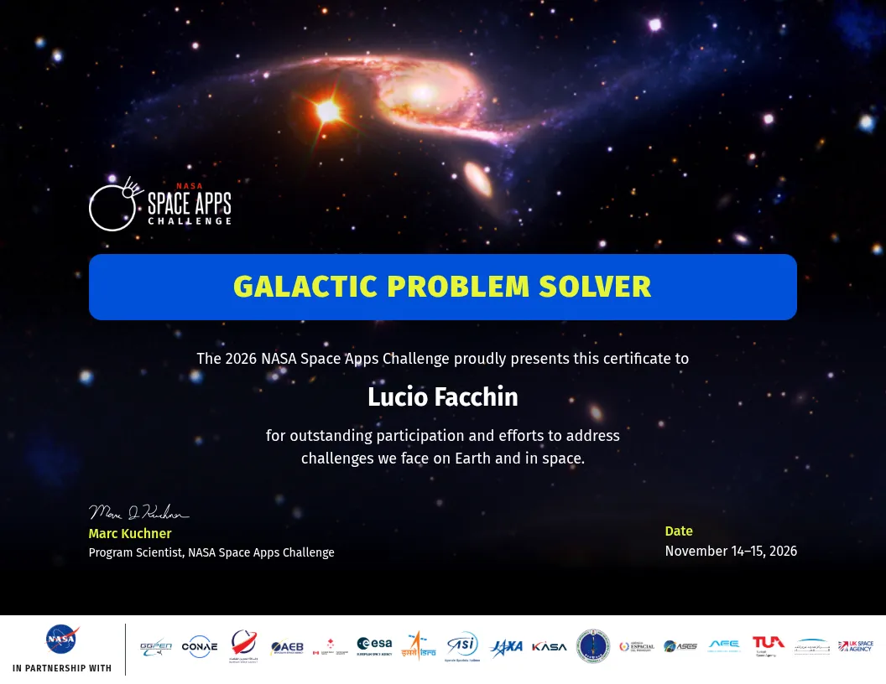

SELENE
Ver el sitio- Contexto
- NASA Space Apps Challenge 2026 · sede Salto/Paysandú
- Desafío
- N.º 4 · Crea un explorador de misiones lunares
- Equipo
- Hubble27 · 6 estudiantes
- Rol
- Frontend e interfaz · traducción ES/EN · edición del video
- Stack
- Vite · JavaScript sin framework · three.js · Web Workers · Node.js para los datos · Vercel
- Repositorio
- github.com/lucioooofacc/Selene-SpaceApps
- Descripción
- En el polo sur de la Luna el Sol apenas roza el horizonte y la Tierra aparece y desaparece detrás del relieve. Una misión necesita las dos cosas: luz para los paneles y la Tierra a la vista para comunicarse. SELENE compara sitios y fechas de alunizaje y muestra dónde están el Sol y la Tierra sobre el horizonte real de cada sitio, con ranking de sitios, mapa de calor de iluminación, la Luna en 3D y un informe imprimible.
Horizonte local · polo sur
Día 0 de 29,5
- Sol
- —
- Tierra
- —
- Luz en el ciclo
- —
- Enlace directo
- —
Sol visibleTierra visible
Esquema ilustrativo: la escala vertical está exagerada y los valores no son datos reales. SELENE usa efemérides de JPL Horizons y el relieve LOLA.
- Elegís un sitio de alunizaje, o coordenadas propias, y un rango de fechas de hasta 30 días.
- El motor lee las efemérides de JPL Horizons y calcula, hora a hora, la altura del Sol y de la Tierra en ese punto.
- Las compara con el horizonte real del sitio, sacado del relieve LOLA, para saber cuándo hay luz y cuándo hay enlace directo.
- Resume la misión en tarjetas de viabilidad, un ranking de sitios y un informe imprimible.


- Timeline
- 13/11/2026 → 15/11/2026 · 48 horas de hackathon, más de 320 commits y 149 pull requests
- Datos NASA
- Efemérides de JPL Horizons (DE441) · relieve LOLA del LRO a 240 m por píxel · mosaicos LROC del NASA SVS
- Proceso
- Réplica exacta del diseño en Figma, motor validado con 226 pruebas contra los datos de la NASA y una interfaz bilingüe con paleta para daltonismo, alto contraste y modo de menos movimiento.
- Resultado
- Certificado Galactic Problem Solver de la NASA. El resultado del jurado local sigue pendiente.
Luna 3D: mosaico LROC del NASA SVS (CGI Moon Kit)